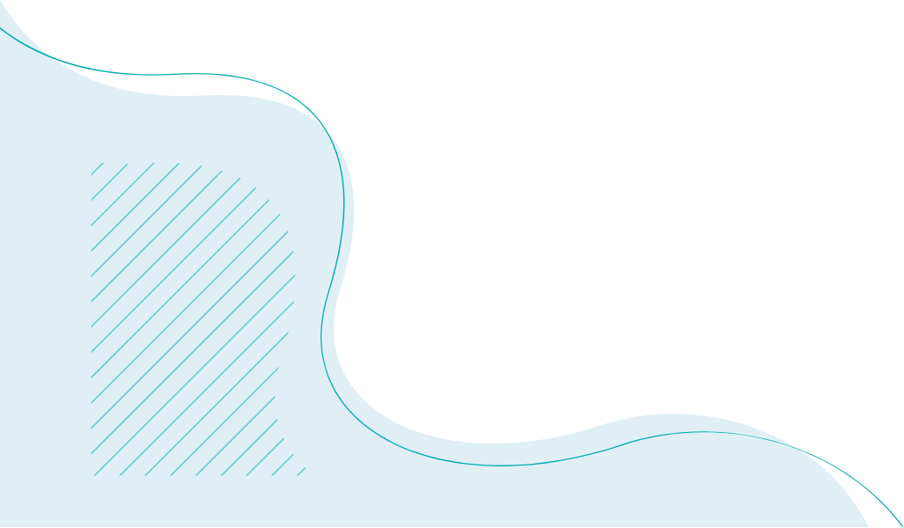
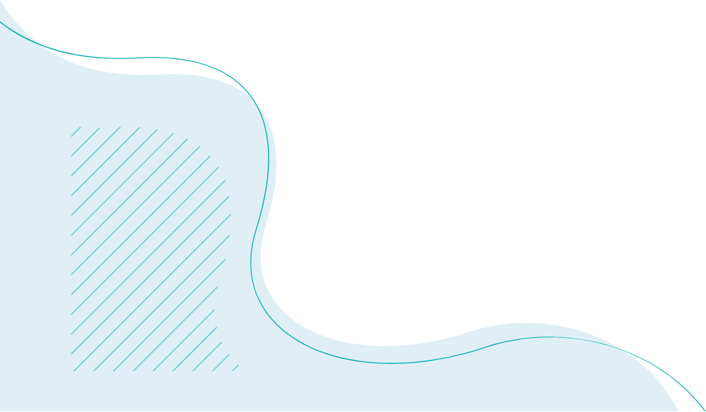
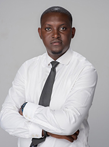

MANZI MUNANURA
Manzi is an industrial psychologist and expert trainer, coach, facilitator, an
organization Development expert with a keen interest in performance management
and a strong focus on organizational and institutional development. Manzi has led and trained
teams of over a hundred companies,NGOs,CBOs and CSOs in management & leadership, mentorship,
human rights, advocacy, psychosocial support, monitoring and evaluation
He is passionate about youth empowerment, child protection, harm reduction,
capacity strengthening, quality control and administration. He has represented
Uganda in the 2019 Training and Leadership program TALP with ARASA in South Africa,
is an alumni with the Uganda Youth Network UYONET youth CSO and leadership program
2019 and as well an alumni with The Elemelu Foundation TEF 2021.
He has extensive training and certification in Universal Health coverage,
differentiated service delivery,counselling among others